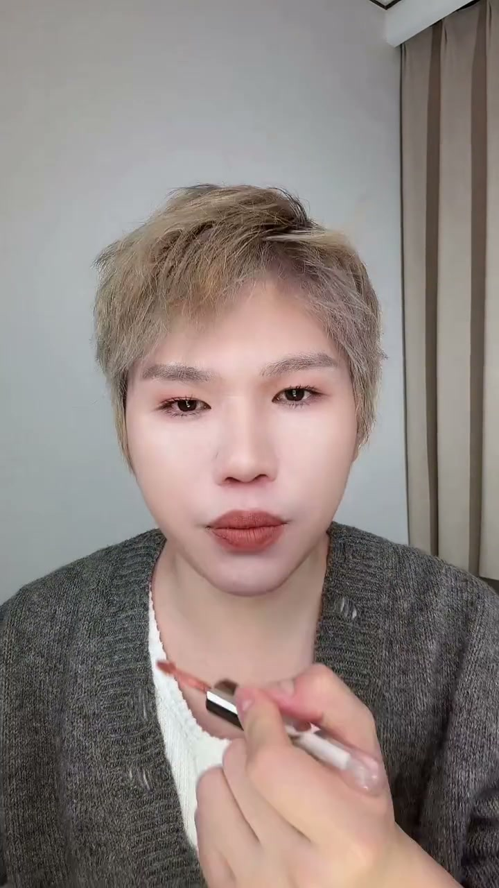
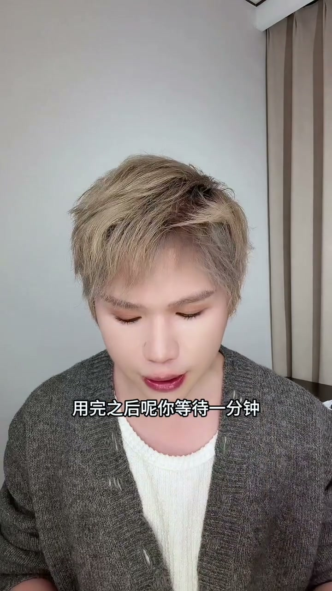
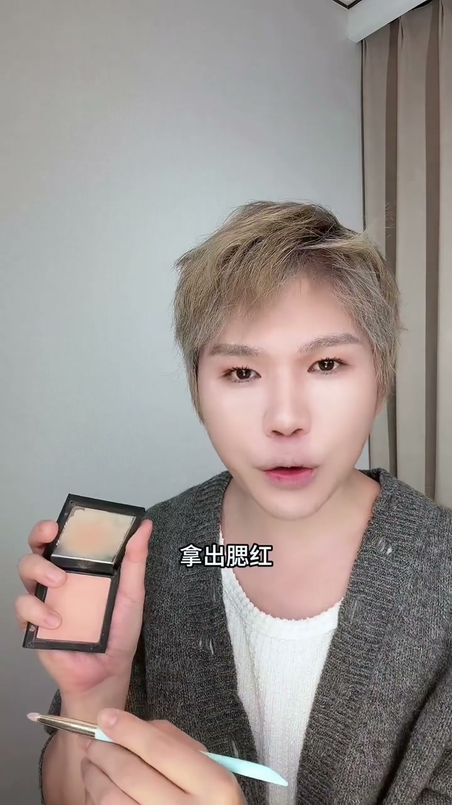
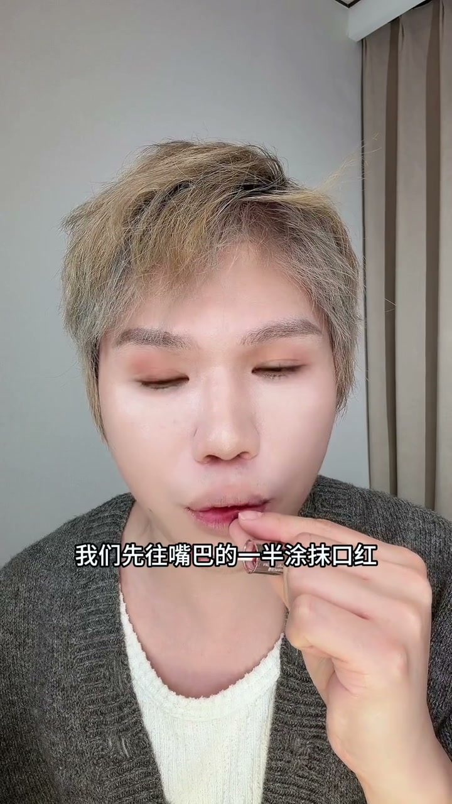
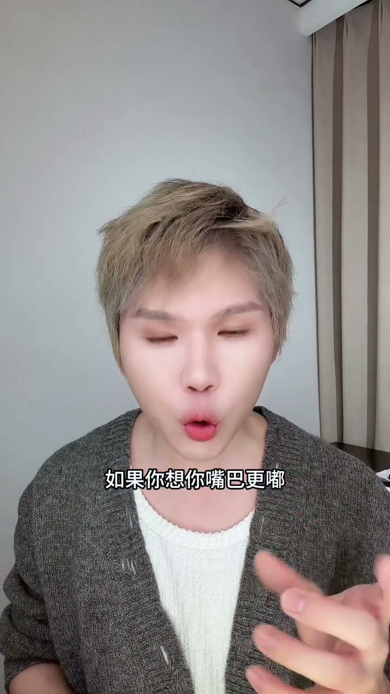

为什么画口红显老？
00:00很多人涂口红：直接涂抹在嘴巴上 → 晕开 → 抿一抿。结果：口红容易掉丝、唇纹更加严重、远看整个妆容显老。
00:13博主现场对比：遮住口红，这个妆显年轻；一放开，立刻马上显老十岁。所以专做明星的化妆师建议新手学3D立体唇的化法。

第1步：润唇打底去死皮
00:23先用润唇膏润唇，把嘴巴上的死皮和唇纹细纹先解决掉。润完后等待一分钟，用棉签把死皮揉开，然后抿一抿让嘴巴充分滋润。
00:44再用纸巾把多余的润唇膏膏体抿掉。这样后续上口红才能“巴得住”，否则润唇膏上再涂口红会糊在一起变成一坨，影响持妆。

第2步：遮唇线+腮红定妆
00:58必须遮盖嘴巴边缘的唇线。用肤色遮瑕膏，小刷子取一点在手背先过渡，沿着唇线薄薄铺上去。
01:13铺开后用擦的方式（不是按压）——擦会让粉变薄，按压会像上皮一样厚。
01:30遮完唇线后，拿出腮红在唇线边缘定妆，后续嘴巴边缘就不会脱妆。

进阶：微笑唇与V字立体
01:47非常关键的一步：微微一笑，看到嘴角有阴影的地方，用一点腮红在阴影处轻轻扫出去——就像微笑唇一样。上唇人中的地方画一个V字形，嘴巴会显得更立体。

第3步：双色口红——内深外浅
02:16上口红：先选择偏裸色的浅色打底。所有明星画好看的口红都不是一个颜色，需要浅色+深色两个颜色。
02:28打底时先往嘴巴内侧涂抹（不要涂向外边），上下唇中间画E字形涂上去。然后用手指沾一点口红，从中间慢慢往外点开——嘴巴从里往外扩出来，变得立体。
03:11再选择更深的颜色加深：只加深在嘴巴中间（上下唇中间），同样用手指轻轻往外边缘点开。
03:29成品：里面深、外面浅，整个嘴巴3D立体感非常强。

第4步（可选）：唇珠高光
03:38秋冬想不显唇纹：用滋润型润唇膏点在下嘴巴的两个唇珠，稍微连接在一起；上嘴唇中间两个唇珠也连接起来；最后手指在唇峰带一下。
03:58一个非常立体的3D唇就画出来了：近看嘟嘟的，远看很立体，不显嘴巴凸但看起来饱满。